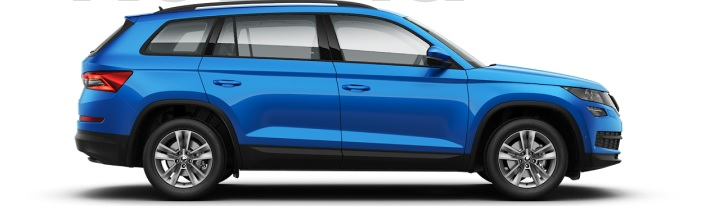

ШКОДА Кодьяк (кроссовер) модель 2016г.
Краткое описание товара:
Чешский среднеразмерный семейный кроссовер для комфортной езды по городу и выезда за город.
Подробное описание товара:
Škoda Kodiaq — среднеразмерный кроссовер, выпускающийся с 2016 года чешской компанией Škoda Auto.
Серийная версия была представлена 1 сентября 2016 года в Берлине. Транспортное средство основано на модульной платформе Volkswagen Group MQB,
которое оно делит совместно с новым поколением Volkswagen Tiguan и ещё нескольких марок автомобилей,
однако Kodiaq имеет большую длину, чем Tiguan, и предлагается как в пяти, так и в семиместной комплектации.
Построен на платформе Volkswagen Group MQB и разделяет её с Volkswagen Tiguan 2 поколения (при этом чешский кроссовер имеет 7-местную версию и длиннее).
В будущем возможно также появление гибридной версии и версий купе и пикап (по аналогии с BMW X4). Назван в честь аляскинского бурого медведя — кадьяка, который в свою очередь назван в честь острова Кадьяк.
Одноимённый город, расположенный на этом острове, был переименован на один день (6 мая 2016 года) местными властями по случаю выпуска автомобиля (c Kodiak на Kodiaq).
Модификация Kodiaq Scout имеет увеличенный с 187 мм до 194 мм клиренс и некоторые изменения в конструкции, которые включают переднюю и
заднюю защиту днища кузова с отделкой бампера, серебристые колпаки зеркал, а также особые шильдики на переднем крыле и перчаточном ящике.
В стандартной комплектации автомобиль предлагается с полным приводом и двумя турбированными двигателями TSI или двумя турбодизельными двигателями TDI.
Версия Kodiaq Sportline разрабатывалась с целью придать автомобилю спортивный характер.
В число отличительных особенностей входят окрашенные в чёрный цвет отдельные конструкции кузова,
спортивные сиденья в салоне, руль из кожи, большие легкосплавные колёсные диски и алюминиевые педали.
Характеристики товара:
Модификация 2.0 AMT 4x4
Объем-------------2.0
Мощность--------180 л.с.
Коробка-----------робот
Тип двигателя---бензин
Топливо-----------АИ-95
Привод------------полный
Разгон-------------7.8 с
Расход-------------7.3 л
Размеры, мм
Длина--------------------------4697
Ширина-----------------------1882
Высота------------------------1655
Колёсная база----------------2791
Клиренс-----------------------187
Ширина передней колеи---1586
Ширина задней колеи------1576
Размер колёс---------215/65/R17
Объём и масса
Объем багажника мин/макс-----л270/2065
Объём топливного бака----------л58
Снаряженная масса---------------кг1707
Полная масса-----------------------кг2307
Полный арсенал средств для безопасного движения
ŠKODA OCTAVIA сконструирована на платформе MQB, которая является основой для разных моделей концерна Volkswagen,
в том числе бренда премиум-класса Audi.
Поэтому не удивляйтесь тому, что для ŠKODA OCTAVIA предлагается намного больше систем безопасности, чем для автомобилей конкурирующих марок.
Например, в состав электронной системы поддержания курсовой устойчивости ESC, стандартной для большинства комплектаций ŠKODA OCTAVIA,
входит несколько
подсистем: XDS+ отвечает за более точное прохождение поворотов, перераспределяя тягу между ведущими колёсами, EDS улучшает проходимость,
заменяя блокировку
дифференциала, Multicollision Brake уменьшает вероятность повторных столкновений после первого сильного удара в ДТП:
автомобиль начнёт тормозить в автоматическом режиме.